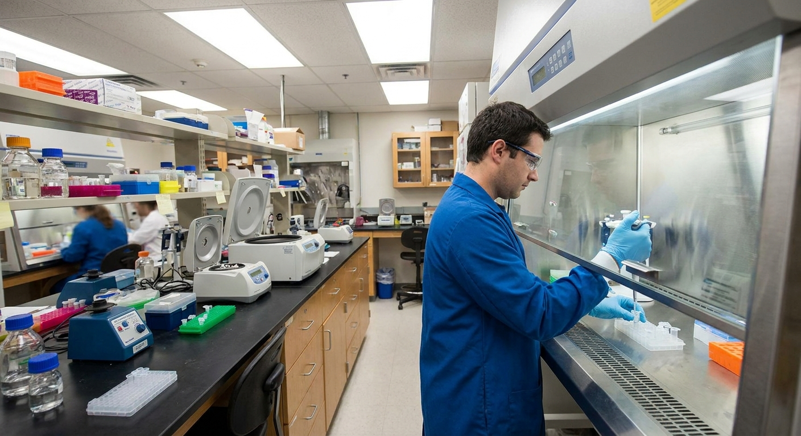

BioMate AI · 中文
Medicines designed
for the immune system
A new generation of medicines for immune-mediated disease
The biomedical research platform
Connecting tools is only the start
The problems that matter — fragmented data, expert judgment that never gets captured, models that fail on new targets, results that never flow back — aren’t solved by wiring tools together. What sets us apart is depth: self-hosted models fine-tuned on proprietary data, a closed loop that gets stronger with every experiment, honest multi-constraint validation, and private, auditable deployment.

Self-hosted models
Generative and domain models fine-tuned on proprietary data — private and deterministic, not a black box.
Research engines →A closed loop that compounds
Every experiment — including the negatives — flows back as a training signal, so the models get stronger and adapt to new targets.
How it works →Honest and private
Activity, selectivity, developability, FTO and mechanism, each control-anchored — nothing advances without passing the gate. Runs in your own environment, auditable end to end.
Explore the platform →
Drug discovery
From the right target
to the right molecule
We use the platform end to end to run our own drug development. It starts with the right target — the choice that most often decides whether a drug works. From there, designing a real medicine — for us, an AI-designed cyclic peptide — is not one shot: we check what matters before anything is made, let the lab decide, and feed every result back, so every round is better than the last.
Where our program focuses
Three failures of immunity
one focused mission

Autoimmune
When immunity attacks the body
Rheumatoid arthritis, lupus, inflammatory bowel disease, psoriasis, multiple sclerosis and more.
Explore →
Chronic infection
When immunity can’t clear a pathogen
Persistent and latent viral infection, and infection-driven immune exhaustion.
Explore →
Immuno-oncology
When immunity is evaded by a tumor
Immunologically cold and checkpoint-resistant cancers — our lead program is in pancreatic cancer.
Explore →Validated in the open
Science you can stand behind
We validate the platform in the open: published methods and benchmarks on real data. That is the evidence beneath both the platform and the medicines we design on it.
Peer-reviewed methods
The platform’s methods build on published, peer-reviewed research.
Publications →Evaluated on real data
We benchmark the platform on real data and report the results in the open.
How we evaluate →Partners in the field
Innovation Partner of the Autoimmune Neuromuscular & Nerve Disorders Drug Development Summit.
About the summit →